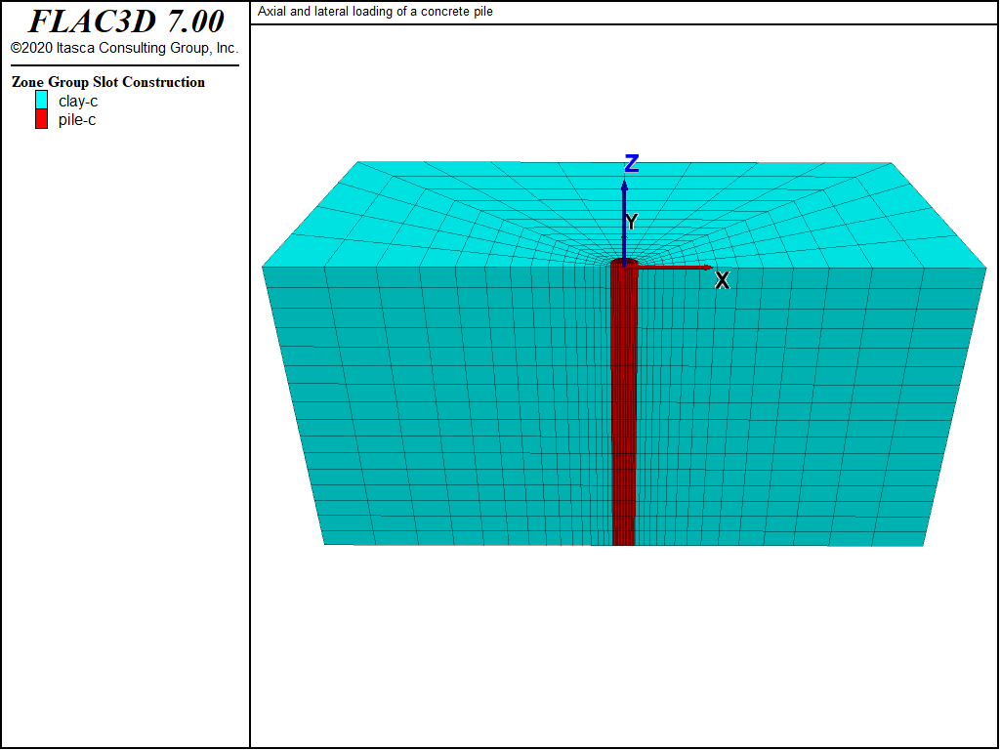
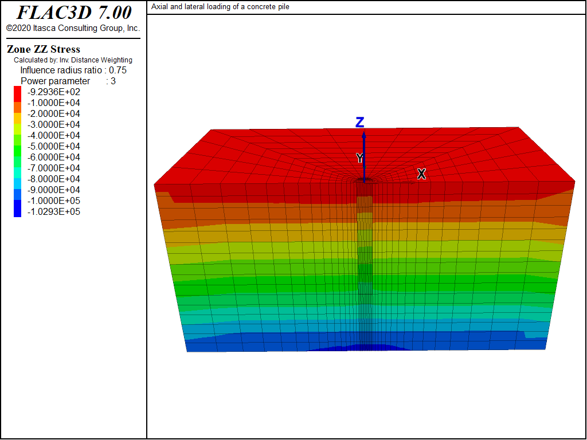
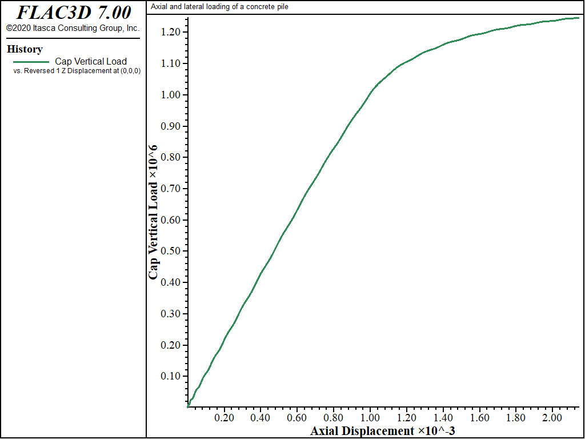
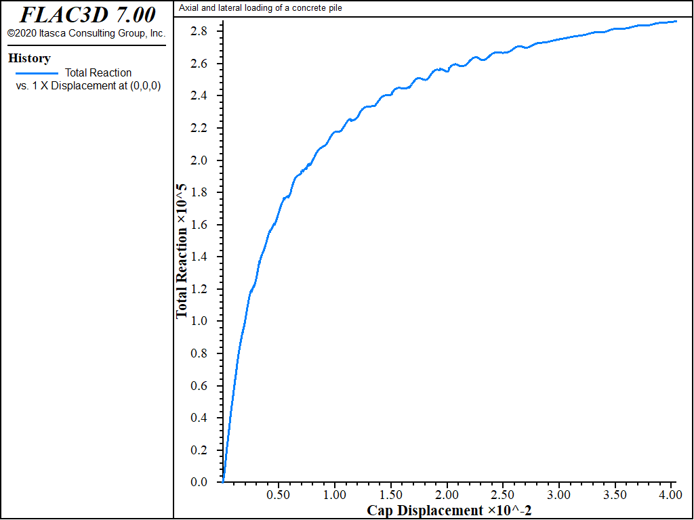
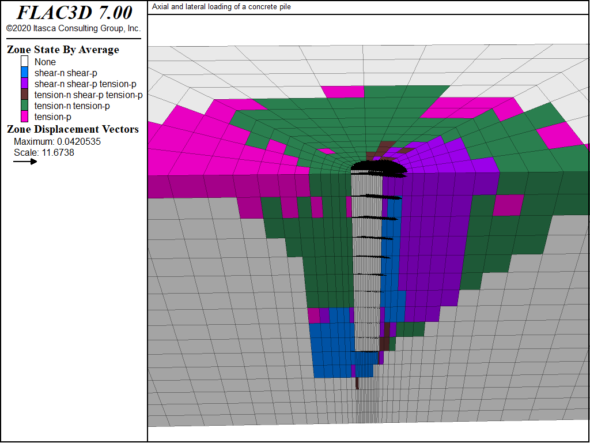
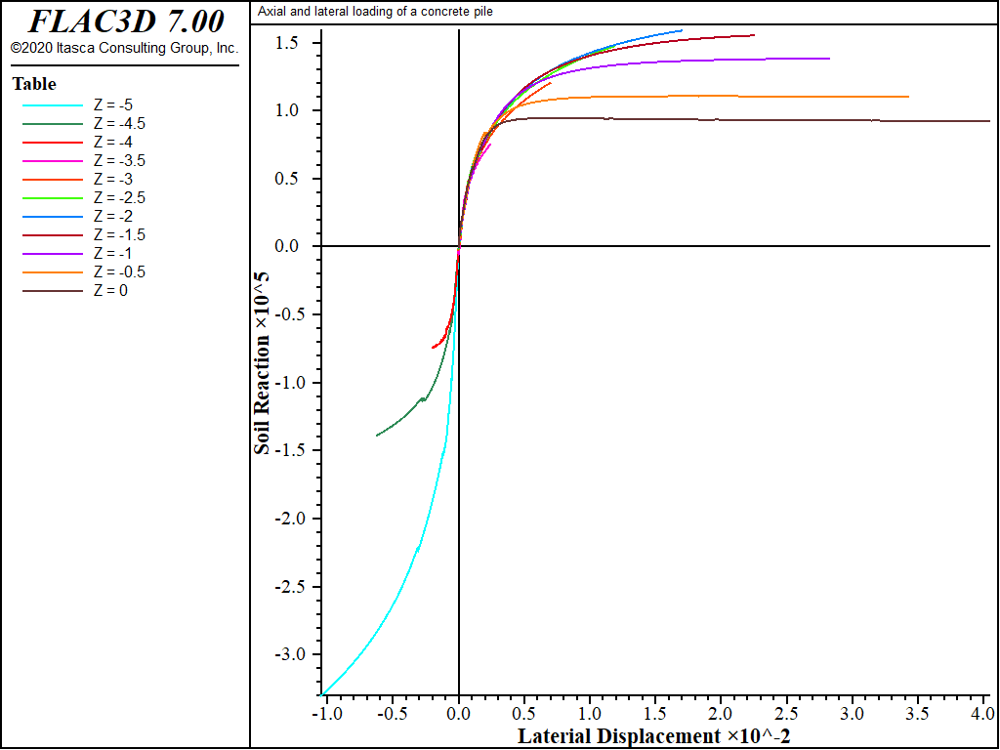

混凝土桩的轴向与侧向加载
问题描述
注意
要在 FLAC3D 中查看此工程，请使用菜单命令 。选择“ExampleApplications/ ConcretePile”，再选择“ConcretePile.f3prj”即可加载。所使用的主数据文件（main data files）在本示例末尾给出。其余数据文件可在该工程中找到。
计算单根混凝土桩基础在轴向和侧向加载下的荷载—变形响应。桩首先承受 100 kN 的轴向荷载，随后令桩顶水平移动至最大位移 4 cm。确定了轴向荷载与桩极限承载力之间的关系，并计算了侧向荷载—变形曲线。
桩的直径为 0.6 m、长为 5 m，埋置于均质黏土层中。地下水位面位于 5.5 m 深度处。混凝土桩和黏土的性质汇总于表 1（Table 1）。
| 混凝土桩 | 黏土 | |
|---|---|---|
| 干密度 | 2500 kg/m3 | 1230 kg/m3 |
| 湿密度 | - | 1550 kg/m3 |
| 弹性性质： | ||
| 杨氏模量 | 25.0 GPa | 100.0 MPa |
| 泊松比 | 0.20 | 0.30 |
| 体积模量 | 13.9 GPa | 83.33 MPa |
| 剪切模量 | 10.4 GPa | 38.46 MPa |
| 强度性质： | ||
| 黏聚力 | - | 30 kPa |
| 摩擦角 | - | 0.0 |
建模步骤
通过桩轴的竖直平面是本分析的对称面。FLAC3D 模型的坐标原点位于桩顶，\(z\) 轴沿桩轴向上。模型网格见图 1（Figure 1）。模型顶部（\(z\) = 0）为自由面。模型底部（\(z\) = -8 m）在 \(z\) 方向固定，模型侧面在 \(|x|\) = 8 m 和 \(y\) = 8 m 处施加滚动边界。
桩的轴向承载力是沿桩身的侧摩阻力和桩端端承力的函数。桩侧摩阻力通过在桩壁与黏土之间设置接触面来模拟。接触面的摩擦和黏聚力性质反映混凝土与黏土之间的摩擦阻力。本示例假定接触面性质的摩擦角为 20°、黏聚力为 30 kPa。第二个接触面设置在桩端与黏土之间。


图 1：黏土中混凝土桩竖向与侧向加载的 FLAC3D 网格。
为获得最佳性能，使用了两个独立的接触面——一个位于桩壁，另一个位于桩底。在前面的命令中已将网格单元的面分离，因此两者共用的网格点也会被分离。
在安装桩之前，模型先在重力荷载作用下达到平衡应力状态。在 \(z\) = -5.5 m 处建立水平地下水位面，并将黏土的湿密度赋予地下水位面以下的网格单元。在下一分析阶段，模型在桩安装完成后重新达到平衡。桩的安装通过将桩所在网格单元的性质由代表黏土材料的性质改为代表混凝土桩材料的性质来模拟。平衡状态下的竖向应力分布（包括桩的重量）见图 2（Figure 2）。


图 2：初始应力状态下的竖向应力云图（包括桩的重量）。
桩在轴向的极限承载力通过在桩顶施加竖向速度来计算。该速度通过“斜坡”方式施加（即边界条件从零线性增大到目标值）。这对本问题特别有帮助，因为混凝土与黏土的刚度差异很大，从而造成本模型自振周期的巨大差异。由于临界时步受混凝土的高刚度控制，因此需要数万个时步才能使荷载在模型中传播。如果突然施加该速度，惯性效应将在初始阶段占据主导，从而使识别系统的稳态响应更加困难。
采用 ramp 表格将速度施加到桩顶网格点上。FISH 函数 竖向荷载（vert _load） 计算桩顶的轴向应力并将该值存储为时程。为提高效率，顶盖表面上的网格点以映射表的形式存储在符号 盖帽（cap） 中。当速度在 30,000 个时步内由 0.0 线性增至 5x10-8 时，桩顶轴向应力随轴向位移的变化曲线见图 3（Figure 3）。请注意，该响应中最初仅观察到少量振荡。
本阶段分析采用组合阻尼，因为对于规定的加载条件，这种阻尼能更有效地从模型中移除动能。对于所施加的速度荷载，大多数网格点的速度分量不会改变符号。局部阻尼在这种情况下效果不佳，因为质量调整过程依赖于速度符号的改变。（见理论与背景部分中关于力学阻尼（mechanical damping）的一节。）


图 3：桩顶轴向应力随轴向位移的变化。
图 3（Figure 3） 表明桩的极限承载力约为 1.1 MPa。极限承载力是桩端端承力和桩侧（摩擦）阻力的函数。例如，若将接触面的黏聚力设为零，则只有桩端提供阻力，计算得到的极限承载力约为 0.3 MPa。建议将计算得到的桩承载力与现场试验结果进行比较，以确定接触面强度性质所应采用的合适数值。
从初始重力加载状态重新进行分析，以计算对 100 kN 轴向荷载的响应。该荷载通过在桩顶施加 0.354 MPa 的轴向应力实现。所施加的应力约为极限轴向承载力的三分之一。在此荷载下，桩顶向下位移 0.33 mm。
模型在 100 kN 轴向荷载下达到平衡后，随后使桩顶侧向移动至 4 cm 的挠度。这是通过在桩顶施加水平速度实现的。本阶段不使用斜坡加载，因为在该方向加载时惯性效应较小。在桩帽上施加 1x10-7 的水平速度。
桩顶的侧向力—挠度曲线见图 4（Figure 4）。产生 4 cm 挠度所需的侧向荷载约为 300 kN。该阶段桩的位移和土体的塑性状态见图 5（Figure 5）。


图 4：桩顶侧向力随侧向位移的变化。


图 5：侧向挠度达 4 cm 时的桩位移与土体塑性状态。
文件“p-y.dat”中的 FISH 函数 总反力（tot _reac） 用于监测沿桩身的土体反力随侧向位移的变化。总反力（tot _reac） 生成沿桩身不同位置处土体反力（\(p\)）与侧向位移（\(y\)）关系的表格，以绘制 \(p-y\) 曲线。计算得到的 \(p-y\) 曲线见图 6（Figure 6）。


图 6：沿桩身 11 个等距点处的 \(p-y\) 曲线［土体反力 p（N/m）与侧向位移 y（m）的关系］。
数据文件
ConcretePile.dat
model new
model large-strain off
model title 'Axial and lateral loading of a concrete pile'
; 通过拉伸工具交互创建网格，
; 并从状态记录窗格导出为 geometry.f3dat。
program call 'geometry' suppress
zone generate from-extruder
; 镜像网格，将四分之一空间扩展为二分之一空间
zone reflect dip-direction 270 dip 90
; 命名两个拉伸视图中已命名对象的交线
zone group 'clay' range group 'clay-c' or 'clay-s' or 'wetclay-s'
zone group 'pile' range group 'pile-c' group 'pile-s' or 'remove-s'
zone group 'remove' range group 'remove-s' group 'pile-c' not ;
zone face group 'wall' internal range group 'wall-c' group 'pile'
zone face group 'base' internal range group 'base-s' group 'pile'
zone face skin ; 命名远场边界
; 删除标记为待移除的区域
zone delete range group 'remove'
;
; 设置界面——使用 ZONE SEPARATE 一次性
; 进行分离，使共用节点分开
zone separate by-face new-side group 'iwall' slot 'int' ...
range group 'wall' or 'base'
; 需要两个不同的界面，以确保拐角处法向方向正确
zone interface 'side' create by-face range group 'wall' and 'iwall'
zone interface 'base' create by-face range group 'base' and 'iwall'
; 保存初始几何状态
model save 'geometry'
;
; 初始化重力、孔隙压力、密度和应力状态
model gravity 10
; 地下水位信息
zone water density 1000
zone water plane origin (0,0,-5.5) normal (0,0,-1)
zone initialize density 1230
zone initialize density 1550 range group 'wetclay-s' ; 湿密度
; 为土体和界面分配属性——暂时移除桩帽
zone cmodel assign mohr-coulomb ...
range group 'clay'
zone property bulk 8.333e7 shear 3.846e7 cohesion 30000 fric 0 ...
range group 'clay'
zone cmodel assign elastic range group 'pile'
zone property bulk 8.333e7 shear 3.846e7 range group 'pile'
zone cmodel assign null range group 'remove-s'
zone interface node property stiffness-normal 1e8 ...
stiffness-shear 1e8 friction 20 cohesion 30000
; 边界条件和初始应力条件
zone face apply velocity-normal 0 range group 'Bottom'
zone face apply velocity-normal 0 range group 'East' or 'West'
zone face apply velocity-normal 0 range group 'North' or 'South'
zone initialize-stress ratio 0.4286
zone interface node initialize-stresses
; 求解至初始平衡
zone ratio local
model solve ratio 1e-4
model save 'initial'
;
; 安装桩
model restore 'initial'
zone cmodel assign elastic range group 'pile'
zone property bulk 13.9e9 shear 10.4e9 density 2500 range group 'pile'
model solve ratio 1e-4
model save 'install'
;
; 竖向加载
zone initialize state 0
zone gridpoint initialize displacement (0,0,0)
zone gridpoint initialize velocity (0,0,0)
table 'ramp' add ([global.step],0) ([global.step+30000],-5e-8) ...
([global.step+58000],-5e-8) ; 增大施加于桩的速度，
; 历时 30,000 步
zone face apply velocity-normal 1 table 'ramp' range group 'Top'
history interval 250
zone history name 'disp' displacement-z position (0,0,0)
program call 'load'
fish history name 'load' vert_load
zone mechanical damping combined
model step 58000
model save 'vertical-loading'
;
; 先竖向加载，再横向加载
model restore 'install'
zone initialize state 0
zone gridpoint initialize displacement (0,0,0)
zone gridpoint initialize velocity (0,0,0)
zone face apply stress-zz [-1.0e5/(math.pi*0.3*0.3)] range group 'Top'
model solve ratio 1e-4
model save 'lateral-load-start'
; 通过在桩帽上施加 x 方向速度实现横向加载
zone initialize state 0
zone gridpoint initialize displacement (0,0,0)
zone gridpoint initialize velocity (0,0,0)
zone face apply velocity-x 1e-7 range group 'Top'
zone history name 'disp' displacement-x position 0,0,0
; 调用 tot_reac 时计算桩的 p-y 曲线
program call 'p-y' suppress
[make_pydata] ; 生成 p-y 曲线计算数据
[output_structure] ; 检查 p-y 曲线数据的合理性
fish history name 'load' tot_reac
model step 416500
model save 'lateral-load'
⇐ Prediction of Borehole Closure in a Salt Formation | Undrained Cylindrical Cavity Expansion in a Cam-Clay Medium ⇒
| 这些内容对您有帮助吗？… | FLAC3D © 2019, Itasca | 原文更新于 2020 年 10 月 8 日 |
| 版权与免责声明 | ||